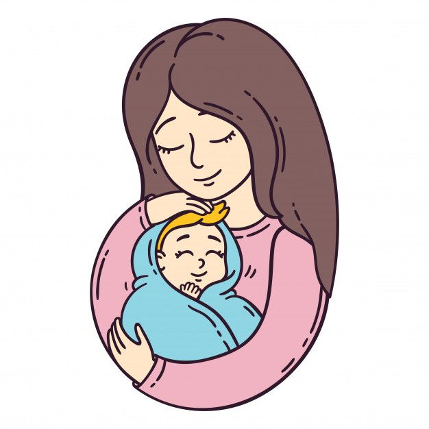
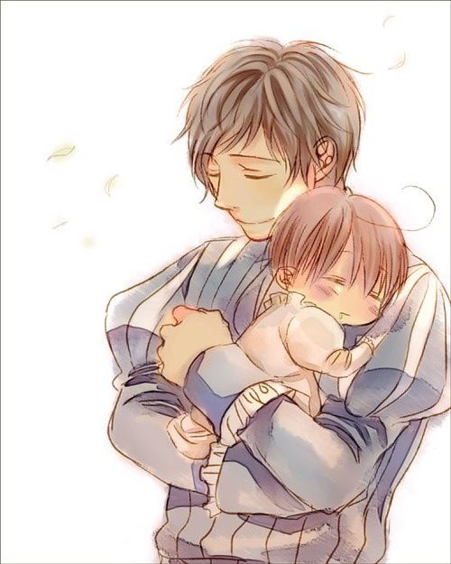
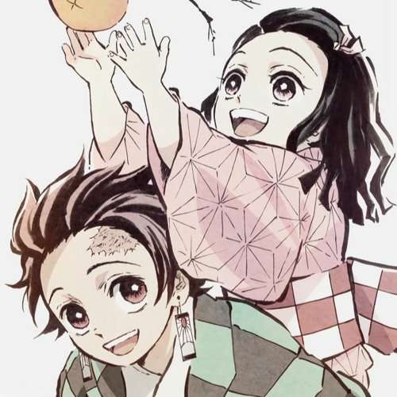

FAMILY
MOTHER
FATHER
SIBLINGS
BEAUTY OF FAMILY
Family love each other no matter what happens . They lend listening
ears and open arms yearnings for each other's embrace . Though it is not an adjective,there
is a something to be said about having a family who you trust with sharing every part of your life with.
A family consists of mother ,father ,siblings.
MOTHER

Mothers are guardian angles for their children,always loving and supporting them.
Because she is the first person a child sees after birth,
every youngster holds a particular place in their heart for their mother.
this is why a child and their mother will have such a strong attachment.
Role of Mother
A mother
helps develop a child's social and emotional skills by assisting them to
get through everyday challenges.She also provide her child with emotional support to
boost their self-confidence.
Importance of Mother
A mother contributes an attentive ear, a soothing existance, and encouraging
counsel whenever loved ones suffer from challenges.She is the source pf psychological strength
during disasters,teaching children how to manage strong emotions and get through difficult times.
FATHER

Fathers, like mothers, are pillars in the development of a child's emotional well-being.
Children look to their fathers to lay down the rules and enforce them. They also look to their
father to provide a feeling of security, both physical and emotional.
Role of Father
A father cares for his family. He shows his children the way they should go in this world.
He protects and works hard for his family. He sets a good example and makes sure his family
doesn't go without — even if he does. Fathers have assumed three primary roles: the protector, the provider,
and the disciplinarian.
Importance of Father
Fathers play a major role in preparing children for life outside the family. Father's level of education and success
on the job is linked with his child's intellec- tual abilities. Fathers' emotional support to others involved in
direct care influences the well-being of children.
SIBLINGS

A sibling is your brother or sister. It's that simple. The word
sibling once meant anyone who is related to you, but now it's reserved for
children of the same parent or parents.Our siblings often play a crucial role in
shaping our sense of identity.